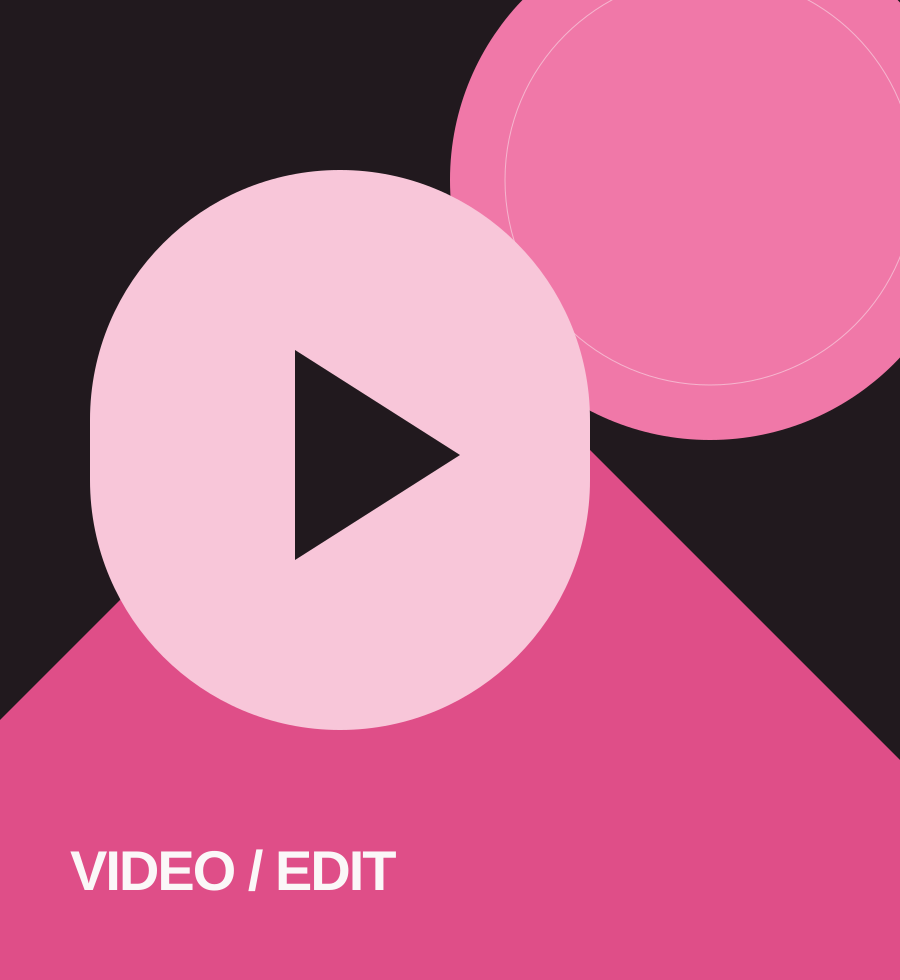
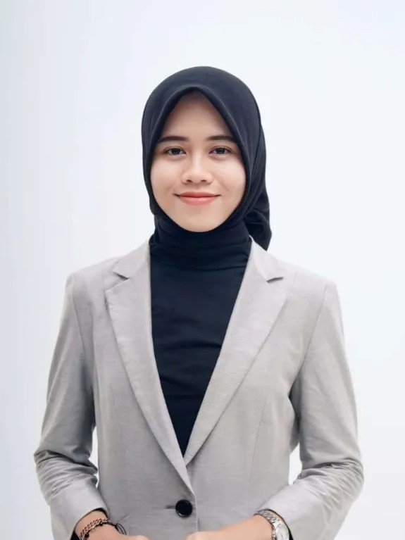
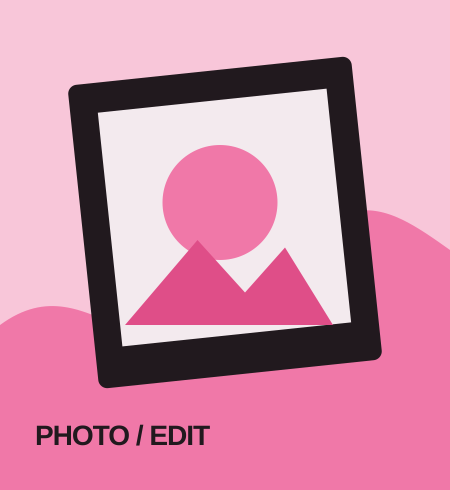
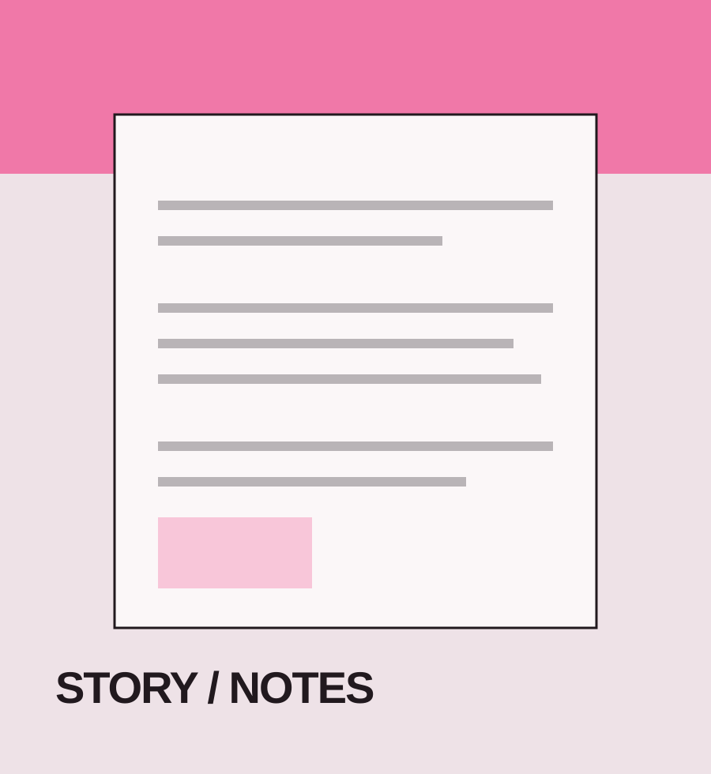

PROJECT / 0101 — POST PRODUCTION
Video Editing
Penyuntingan video, pengaturan alur, tempo, audio, dan penyampaian pesan.
PERSONAL PORTFOLIO / 2026
Mengolah cerita lewat visual, fotografi dan tulisan.

A LITTLE INTRODUCTION
Halo, aku Viana Julita.
Berangkat dari bidang Jurnalistik, aku tertarik pada proses menemukan cerita, menyusun pesan, dan menerjemahkannya ke dalam bentuk visual. Aku juga mengerjakan project editing video dan foto, serta mengembangkan pengalaman di bidang fotografi.
Di sini, kamu bisa melihat beberapa karya dan proses kreatif yang aku kerjakan.
EXPLORE MY WORK ↗
PROJECT / 0101 — POST PRODUCTION
Penyuntingan video, pengaturan alur, tempo, audio, dan penyampaian pesan.

PROJECT / 0202 — PHOTO RETOUCHING
Pengolahan warna, pencahayaan, komposisi, dan detail foto.

PROJECT / 0303 — STORY DEVELOPMENT
Riset, pengembangan ide, penulisan, dan penyusunan cerita.
THROUGH MY LENS
Potongan momen yang pernah aku abadikan. Tambahkan hasil fotomu sendiri lewat tombol di bawah.
YOUR PHOTOGRAPHY GOES HERE
Belum ada foto. Klik “ADD PHOTOS” untuk mulai mengisi galeri.Foto yang ditambahkan tersimpan di browser/perangkat ini. Untuk memindahkan ke perangkat lain, tambahkan ulang fotonya.
HAVE A STORY IN MIND?
Terbuka untuk kolaborasi, project kreatif, dan kesempatan baru.
SAY HELLO ↗